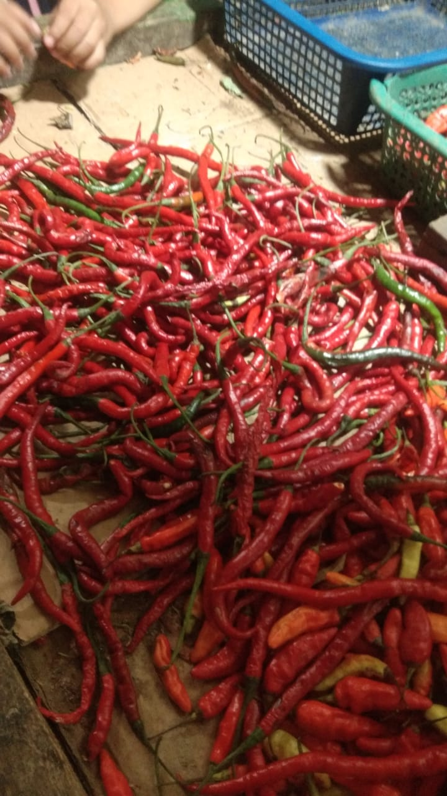

Profil Cabé Beureum
Cabé Beureum terinspirasi dari kecintaan mendalam terhadap segala sesuatu yang pedas, khususnya cabai merah. Sejak kecil, makanan yang bercita rasa kuat dan pedas menjadi sebuah tradisi yang ditanamkan oleh keluarga dan lingkungan tempat tinggal. Dalam setiap acara keluarga dan pertemuan komunitas, hidangan yang menggunakan cabai merah selalu menjadi primadona, menciptakan momen kebersamaan yang penuh kehangatan dan kebahagiaan.
Mulai dari hanya membuat olahan hanya untuk diri sendiri dan keluarga terlihat banyak antusiasnya orang-orang di sekitar yang ingin menikmati makanan pedas. Setiap hidangan diracik dengan cinta dan keahlian, menggunakan cabai merah sebagai bahan utama yang memberikan cita rasa unik dan tak terlupakan. Terinspirasi oleh kecintaan terhadap cabai merah dan keinginan untuk membagikan kelezatan ini kepada lebih banyak orang, lahirlah cabé beureum. Nama ini dipilih sebagai penghargaan terhadap bahan utama yang selalu ada di setiap produk “cabai merah” yang dalam bahasa Sunda dikenal sebagai "cabé beureum"
Cabé beureum hadir untuk menyajikan beragam jajanan pedas yang otentik dan menggugah selera. Dari cilok dengan tekstur kenyal yang berpadu ayam suwir dengan bumbu merahnya, keripik singkong dan keripik bayem renyah yang dibalut rasa pedas dari cabai merah, asinan yang menyegarkan dengan sentuhan pedas yang menggigit, hingga ceker mercon merah yang siap disajikan dengan hangatnya nasi putih. Semua produk dibuat dari bahan-bahan berkualitas tinggi dan resep tradisional yang diwariskan dari nenek
Selain berfokus pada kelezatan produk, cabé beureum juga memiliki komitmen kuat untuk mendukung petani lokal. Kami bekerja sama dengan petani cabai merah di daerah untuk memastikan pasokan cabai merah yang segar dan berkualitas tinggi, memastikan pasokan buah-buahan dan sayuran yang dijadikan asinan, memastikan singkong yang digunakan untuk kripik merupakan singkong terbaik. Dengan cara ini, kami tidak hanya mendapatkan bahan baku terbaik, tetapi juga membantu meningkatkan kesejahteraan petani lokal dan mendukung perekonomian komunitas.
Cabé beureum memiliki misi membagikan kelezatan pedas dari cabai merah kepada semua orang. Kami percaya bahwa makanan pedas bukan hanya soal rasa, tetapi juga soal kenangan dan kebersamaan. Dengan Cabé Beureum, kami berharap dapat membawa sensasi pedas yang memanjakan lidah dan menciptakan momen-momen kebahagiaan bagi setiap pelanggan.